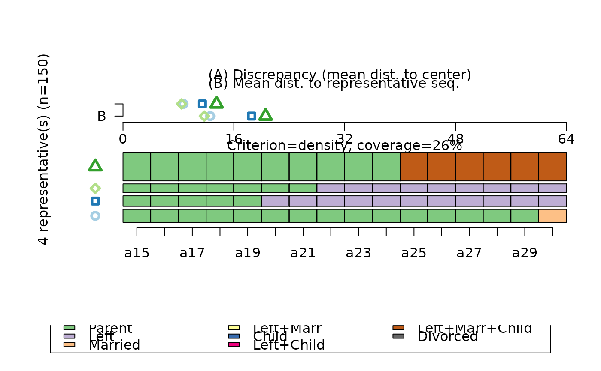
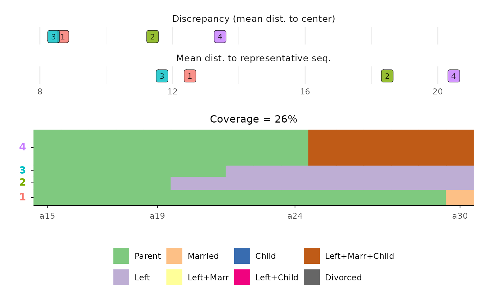

Function for rendering representative sequence plots with
ggplot2 (Wickham 2016)
instead of base
R's plot function that is used by
TraMineR::seqplot (Gabadinho et al. 2011)
.
Usage
ggseqrplot(
seqdata,
diss,
group = NULL,
criterion = "density",
coverage = 0.25,
nrep = NULL,
pradius = 0.1,
dmax = NULL,
border = FALSE,
proportional = TRUE,
weighted = TRUE,
stats = TRUE,
colored.stats = NULL,
facet_ncol = NULL
)Arguments
- seqdata
State sequence object (class
stslist) created with theTraMineR::seqdeffunction.- diss
pairwise dissimilarities between sequences in
seqdata(seeTraMineR::seqdist)- group
A vector of the same length as the sequence data indicating group membership. When not NULL, a distinct plot is generated for each level of group.
- criterion
the representativeness criterion for sorting the candidate list. One of
"freq"(sequence frequency),"density"(neighborhood density),"mscore"(mean state frequency),"dist"(centrality) and"prob"(sequence likelihood). See details.- coverage
coverage threshold, i.e., minimum proportion of sequences that should have a representative in their neighborhood (neighborhood radius is defined by
pradius).- nrep
number of representative sequences. If
NULL(default), the size of the representative set is controlled bycoverage.- pradius
neighborhood radius as a percentage of the maximum (theoretical) distance
dmax. Defaults to 0.1 (10%). Sequence \(y\) is redundant to sequence \(x\) when it is in the neighborhood of \(x\), i.e., within a distancepradius*dmaxfrom \(x\).- dmax
maximum theoretical distance. The
dmaxvalue is used to derive the neighborhood radius aspradius*dmax. IfNULL, the value ofdmaxis derived from the dissimilarity matrix.- border
if
TRUEbars are plotted with black outline; default isFALSE(also acceptsNULL)- proportional
if
TRUE(default), the sequence heights are displayed proportional to the number of represented sequences- weighted
Controls if weights (specified in
TraMineR::seqdef) should be used. Default isTRUE, i.e. if available weights are used- stats
if
TRUE(default), mean discrepancy in each subset defined by all sequences attributed to one representative sequence and the mean distance to this representative sequence are displayed.- colored.stats
specifies if representatives in stats plot should be color coded; only recommended if number of representatives is small; if set to
NULL(default) colors are used if n rep. <= 10; useTRUEorFALSEto change manually- facet_ncol
specifies the number of columns in the plot (relevant if !is.null(group))
Value
A representative sequence plot using ggplot.
Details
The representative sequence plot displays a set of distinct sequences as sequence index plot.
The set of representative sequences is extracted from the sequence data by an internal call of
TraMineR::seqrep according to the criteria listed in the
arguments section above.
The extracted sequences are plotted by a call of ggseqiplot which uses
ggplot2::geom_rect to render the sequences. If stats = TRUE the
index plots are complemented by information on the "quality" of the representative sequences.
For further details on representative sequence plots see Gabadinho et al. (2011)
and the documentation of TraMineR::plot.stslist.rep,
TraMineR::seqplot, and TraMineR::seqrep.
Note that ggseqrplot uses patchwork to combine the different components
of the plot. If you want to adjust the appearance of the composed plot, for instance by changing the
plot theme, you should consult the documentation material of patchwork.
References
Gabadinho A, Ritschard G, Müller NS, Studer M (2011).
“Analyzing and Visualizing State Sequences in R with TraMineR.”
Journal of Statistical Software, 40(4), 1--37.
doi:10.18637/jss.v040.i04
.
Gabadinho A, Ritschard G, Studer M, Müller NS (2011).
“Extracting and Rendering Representative Sequences.”
In Fred A, Dietz JLG, Liu K, Filipe J (eds.), Knowledge Discovery, Knowlege Engineering and Knowledge Management, volume 128, 94--106.
Springer, Berlin, Heidelberg.
doi:10.1007/978-3-642-19032-2_7
.
Wickham H (2016).
ggplot2: Elegant Graphics for Data Analysis, Use R!, 2nd ed. edition.
Springer, Cham.
doi:10.1007/978-3-319-24277-4
.
Examples
# Use examples from TraMineR
library(TraMineR)
# Defining a sequence object with the data in columns 10 to 25
# (family status from age 15 to 30) in the biofam data set
data(biofam)
# Use sample of 300 cases
set.seed(123)
biofam <- biofam[sample(nrow(biofam),150),]
biofam.lab <- c("Parent", "Left", "Married", "Left+Marr",
"Child", "Left+Child", "Left+Marr+Child", "Divorced")
biofam.seq <- seqdef(biofam, 10:25, labels=biofam.lab)
#> [>] 8 distinct states appear in the data:
#> 1 = 0
#> 2 = 1
#> 3 = 2
#> 4 = 3
#> 5 = 4
#> 6 = 5
#> 7 = 6
#> 8 = 7
#> [>] state coding:
#> [alphabet] [label] [long label]
#> 1 0 0 Parent
#> 2 1 1 Left
#> 3 2 2 Married
#> 4 3 3 Left+Marr
#> 5 4 4 Child
#> 6 5 5 Left+Child
#> 7 6 6 Left+Marr+Child
#> 8 7 7 Divorced
#> [>] 150 sequences in the data set
#> [>] min/max sequence length: 16/16
# Computing the distance matrix
biofam.dhd <- seqdist(biofam.seq, method="DHD")
#> [>] 150 sequences with 8 distinct states
#> [>] creating a 'sm' with the costs derived from the transition rates
#> [>] creating time varying substitution-cost matrix using transition rates ...
#> [>] computing time varying transition probabilities for states 0/1/2/3/4/5/6/7 ...
#> [>] 103 distinct sequences
#> [>] min/max sequence lengths: 16/16
#> [>] computing distances using the DHD metric
#> [>] elapsed time: 0.036 secs
# Representative sequence plot (using defaults)
# ... with TraMineR::seqplot
seqrplot(biofam.seq, diss = biofam.dhd)
#> [>] number of objects (sum of weights): 150
#> [>] max. distance: 63.7
#> [>] neighborhood radius: 6.37
#> [>] 4 representative(s) selected, coverage=26% (threshold=25%)
#> [>] 103 distinct sequence(s)

# ... with ggseqrplot
ggseqrplot(biofam.seq, diss = biofam.dhd)
#> [>] number of objects (sum of weights): 150
#> [>] max. distance: 63.7
#> [>] neighborhood radius: 6.37
#> [>] 4 representative(s) selected, coverage=26% (threshold=25%)
#> [>] 103 distinct sequence(s)
